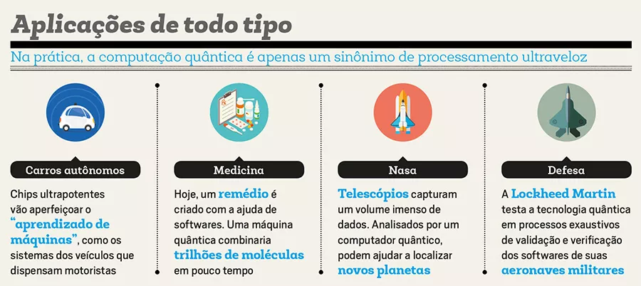

Início
Breve descrição do conteúdo do site...
Sobre a Computação Quântica
Introdução à Computação Quântica em 2023
1. Definição e Contexto:
Computação Quântica: Campo avançado da computação que utiliza princípios da mecânica quântica para processar informações. Em 2023, avanços tecnológicos aceleraram a pesquisa e desenvolvimento nessa área.
2. Qubits e Superposição:
Qubits (Bits Quânticos): Unidades de informação quântica em 2023, permitindo estados simultâneos de 0, 1 ou ambos. Superposição: Exploração eficiente de múltiplos estados, possibilitando cálculos paralelos.
3. Entrelaçamento Quântico:
Entrelaçamento: Fenômeno em que qubits interagem instantaneamente, mesmo separados por grandes distâncias, possibilitando comunicação quântica mais eficiente.
4. Princípio da Incerteza e Medição Quântica:
Princípio da Incerteza de Heisenberg: Destaca as limitações na precisão simultânea da medição de certas propriedades quânticas. Medição Quântica: Processo que colapsa a superposição, fornecendo um resultado definido.
5. Portas Quânticas e Algoritmos:
Portas Quânticas Avançadas: Desenvolvimentos em portas como Hadamard, CNOT e portas de fase. Algoritmos Quânticos Potentes: Algoritmos de Shor e Grover continuam a se destacar, impactando criptografia e busca.
6. Decoerência e Correção de Erros em 2023:
Desafios Continuados: Apesar dos avanços, a decoerência ainda é um desafio, impulsionando pesquisas intensivas em correção de erros quânticos.
7. Aplicações Emergentes:
Computação Quântica em Nuvem: Empresas exploram modelos de negócios baseados em serviços de computação quântica em nuvem. Simulação Molecular: Progressos notáveis na simulação de sistemas moleculares complexos para avanços em química e medicina.
8. Desenvolvimentos Tecnológicos:
Qubits de Estado Sólido: Crescimento em tecnologias como qubits baseados em supercondutores e pontos quânticos. Arquiteturas de Computadores Quânticos: Variedade de modelos, incluindo processadores de portas quânticas e computadores adiabáticos.
9. Perspectivas Futuras e Ética:
Escalabilidade: Desafio chave para implementar sistemas quânticos em larga escala. Questões Éticas: Discussões sobre ética quântica emergem à medida que a computação quântica avança.
Recomendações e Links Úteis
Conteúdo explicativo sobre Computação Quântica produzida pela IBM, empresa que aposta nessa tecnologia E-book produzido pela universidade de Cambridge para aprofundar em Computação Quântica Sistema de controle de computação quântica Guia animado para explicar computação quântica produzido pela Microsoft:Como Ingressar
Aqui você encontra muitas sugestões para se aprofundar na área de computação quântica, entrar nesse mercado e conhecer o que fazem os profissionais da área, seu dia a dia e outras curiosidades
💻 Tutorial
Um tutorial destinado a programadores, visando a compreensão e introdução à Computação Quântica, com foco na simulação de uma aplicação em Python:
📚 Livro
Quantum Computing for Programmers
é uma leitura recomendada pela Universidade de Cambridge para aqueles interessados na temática de computação quântica, especialmente programadores. Este livro oferece insights práticos, algoritmos essenciais e exemplos para facilitar a compreensão e aplicação prática dos conceitos relacionados à computação quântica:
📝 Curso
Curso em português oferecido pela FIAP sobre Computação Quântica para aqueles que buscam recomendações nesta área:
🎬 Vídeo
Um vídeo do canal Qiskit analisa perfis de indivíduos interessados em ingressar na área de computação quântica, oferecendo insights sobre os conhecimentos essenciais que aqueles que desejam trabalhar nesse campo precisam adquirir:
❓ Curiosidade
Vídeo curto de uma pessoa que está envolvida com engenharia de computação quântica:
🎓 Programa Aprendizagem
Programa dedicado à Ciência e Engenharia Quântica em Harvard têm como objetivo principal motivar os estudantes a ingressarem na pesquisa universitária e a se aprofundarem nesse campo específico:
💸 Empregabilidade
A computação quântica, com o suporte da IBM e de outras empresas líderes, oferece ao Brasil uma oportunidade única de impulsionar empregos em setores estratégicos.
Aplicações Práticas
A computação quântica possui um potencial revolucionário nas áreas em que é aplicada,uma vez que um computador quântico é capaz de acessar bilhões de respostas de uma só vez, oferecendo novas abordagens para resolver problemas complexos que desafiam os métodos tradicionais.
Finanças e Economia:
Otimização de portfólios
Uma das aplicações mais notáveis da computação quântica em finanças é a otimização de portfólio.Essa tecnologia pode oferecer soluções mais eficientes para encontrar a combinação ótima de ativos, considerando riscos e retornos.
Criptografia Financeira Quântica
Como a computação quântica tem o potencial de quebrar algoritmos de criptografia convencionais, a implementação de criptografia financeira quântica torna-se crucial. Sistemas de segurança baseados em princípios quânticos podem oferecer uma camada extra de proteção para transações financeiras, garantindo a confidencialidade e autenticidade dos dados.
Análise de riscos financeiros
A probabilidade dos algoritmos quânticos é extremamente útil na análise de riscos financeiros. A capacidade de representar e simular distribuições de probabilidade complexas pode levar a uma compreensão mais profunda e precisa dos riscos associados a determinadas decisões de investimento, o que evitaria prejuízos resultante de algumas dessas decisões.
Detecção de Fraudes
A capacidade dos computadores quânticos de processar grandes conjuntos de dados em paralelo pode ser utilizada para detectar padrões e anomalias em transações financeiras. Isso fortalece os sistemas de segurança, o que proporciona uma resposta mais rápida à atividade fraudulenta e protegendo os sistemas financeiros contra ameaças cibernéticas. Embora estejamos nos estágios iniciais dessa revolução quântica, as aplicações na economia e finanças apresentam um potencial significativo para otimizar processos, reduzir riscos e impulsionar a inovação no setor financeiro global. À medida que a tecnologia quântica amadurece, é esperado que sua influência no mundo financeiro se torne cada vez mais proeminente e transformadora.
Medicina:
Descoberta de medicamentos
Um dos benefícios mais importantes da computação quântica na medicina está na simulação de moléculas complexas. Algoritmos quânticos podem modelar interações moleculares em nível atômico, o que permite um maior entendimento da bioquímica. Isso acelera o processo de descoberta de medicamentos, identificando compostos potencialmente eficazes para o tratamento de doenças de maneira mais rápida e precisa.
Modelagem de doenças complexas
A computação quântica é fundamental para modelar doenças complexas em um nível molecular. Isso é relevante para compreender condições multifatoriais, como câncer e doenças neurodegenerativas. A capacidade de simular sistemas biológicos complexos pode levar a avanços significativos na compreensão e tratamento dessas doenças.
Diagnostico precoce e prevenções
Algoritmos desta tecnologia podem ser empregados na análise de grandes conjuntos de dados, identificando padrões que podem indicar a presença de doenças em estágios iniciais. Isso possibilita o diagnóstico precoce e a implementação de medidas preventivas, melhorando significativamente as taxas de sucesso no tratamento.
A integração da computação quântica na medicina oferece oportunidades emocionantes para avanços significativos. Desde a descoberta de medicamentos até a personalização de tratamentos e a análise de dados médicos, a computação quântica promete revolucionar a maneira como enfrentamos os desafios na área da saúde. À medida que a tecnologia quântica continua a evoluir, esperamos que suas aplicações na medicina contribuam para avanços notáveis, beneficiando pacientes em todo o mundo.
Chips ultrapotentes são capazes de aprimorar o aprendizado de máquinas, incluindo sistemas utilizados em veículos autônomos. Os algoritmos quânticos de otimização podem ser aplicados para maximizar a eficiência das observações telescópicas. Eles podem ajudar na escolha dos momentos ideais para observar determinadas estrelas, melhorando as chances de detectar trânsitos planetários ou outros sinais de exoplanetas. Esses algoritmos também podem garantir a verificação de softwares de maquinas para informar suas condições de uso.
Desafios e Oportunidades
Gráficos ou infográficos destacando desafios...
Matemática da Computação Quântica
Os computadores quânticos são completamente diferentes dos computadores comuns, que são baseados na passagem de corrente elétrica através de pequenos dispositivos semicondutores, chamados de transistores. Já esse novo tipo de computador pode operar a partir dos mais diversos sistemas quânticos, no entanto , as implementações mais populares fazem a leitura do spin, uma propriedade quântica presente em partículas, como prótons, fótons e elétrons.A lógica por trás do computador quântico também é um pouco diferente daquela que é usada nos cálculos clássicos, que operam por meio de cálculo sentenças lógicas históricas os resultados possíveis são apenas os números 0 e 1. A diferença entre os computadores eletrônicos e os quânticos é que, devido à natureza probabilística da física quântica, antes de fazermos a leitura do bit quântico, seu estado pode ser não apenas 0 ou 1, mas também a interseção entre esses estados.É como se nossos computadores quânticos fossem admitidas respostas como sim, não e os dois simultaneamente. Se quiser compreender melhor sobre as probabilidades do mundo quântico, acesse nosso texto sobre o princípio da incerteza de Heisenberg." "Possibilidades do computador quântico Mas afinal de contas, o que pensamos fazer com um computador quântico? Muito provavelmente, os computadores quânticos não serão usados para fins banais como navegar na internet ou assistir a um vídeo, uma vez que, para esses fins, os computadores eletrônicos são bastante eficientes, além de serem muito mais baratos que os computadores quânticos. No entanto, quando falamos de cálculos complexos, como aqueles que envolvem criptografia de senhas bancárias, o uso de computadores quânticos será de grande ajuda. Se formos capazes de tornar os computadores quânticos dispositivos totalmente funcionais, seremos capazes de simular coisas que jamais pensamos ser possíveis, como a dinâmica climática da Terra, a formação de galáxias, simulações de sistemas vivos, e muitas outras possibilidades." "Qubits – os bits quânticos Os bits quânticos são geralmente chamados de qubits (bits quânticos). Esses qubits representam um enorme salto em relação aos bits usados pelos computadores eletrônicos: eles podem apresentar os estados 0 e 1, simultaneamente. Na prática, é como se a capacidade do computador quântico fosse exponencial em relação ao número de bits: um computador de 1 bit quântico equivale a um computador eletrônico de 2 bits clássico e um computador de 2 bits quântico equivale a um computador de 4 bits eletrônicos . Confira a seguir uma tabela que relaciona a capacidade de bits quânticos à sua correspondência com os bits clássicos:" "Processador quântico de 2019 Recentemente, pesquisadores do Google afirmaram ter atingido a “supremacia quântica”, isso porque foram capazes de realizar, em 200 segundos , um projeto que o computador mais avançado do mundo, o Summit, da IBM, levaria cerca de 10 mil anos. O experimento realizado pelos pesquisadores utilizou 53 qubits, correspondendo a cerca de 1016 bits clássicos, para manter o processador quântico em pleno funcionamento, o computador foi desligado em temperaturas baixíssimas, cerca de 20 mK (0,02 K). Os resultados obtidos pelo experimento sugerem que o conceito por trás da máquina de Turing, que teoricamente é universal e capaz de simular qualquer modelo computacional, pode estar errado. Isso porque, computadores clássicos, baseados no conjunto teórico de Turing, não são capazes de realizar as tarefas feitas pelo processador quântico, pelo menos não com a mesma velocidade e tampouco, com a mesma solução."